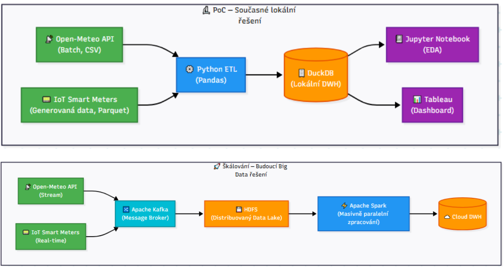
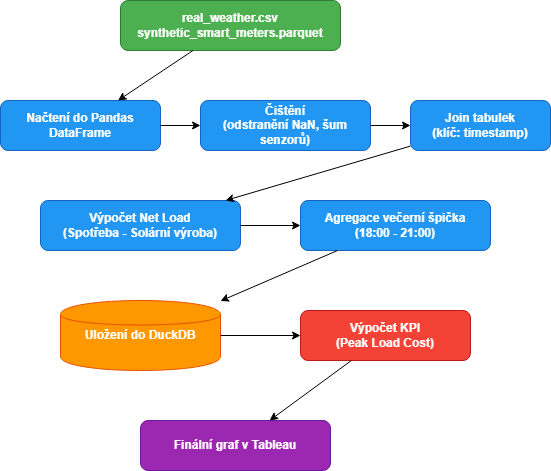
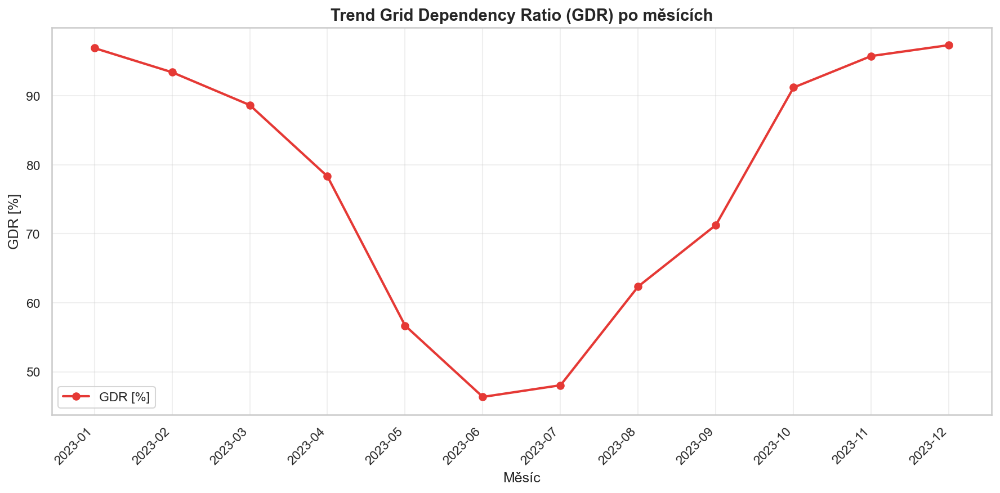
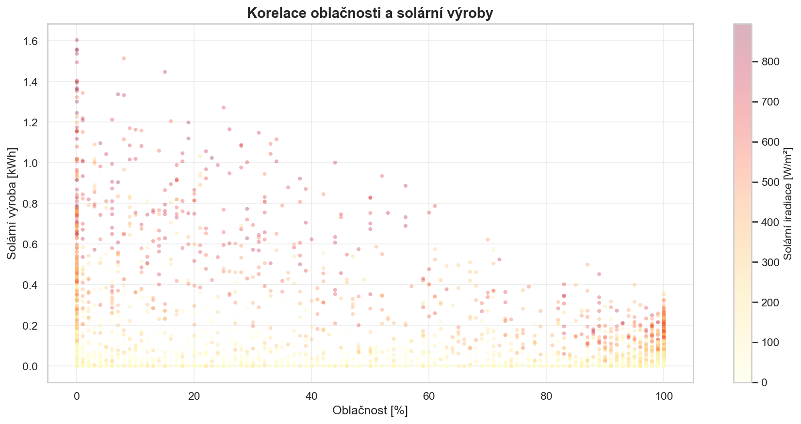
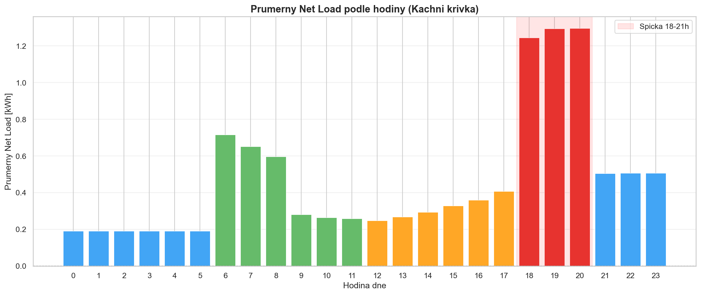
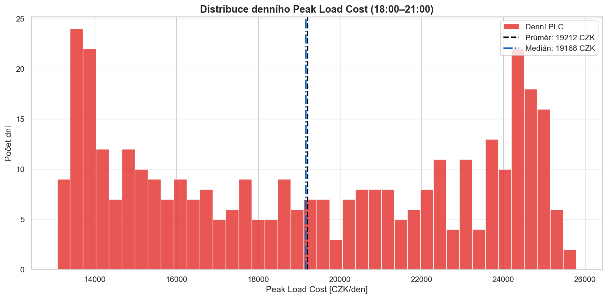
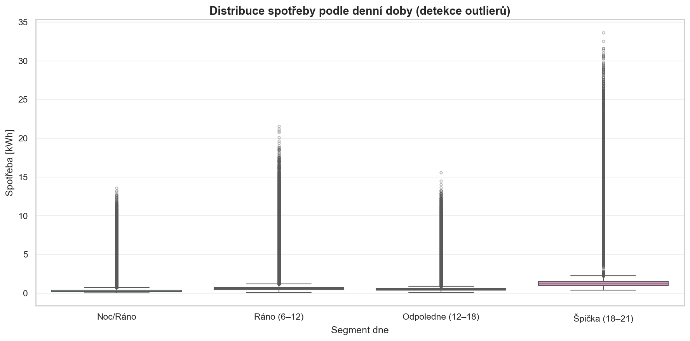
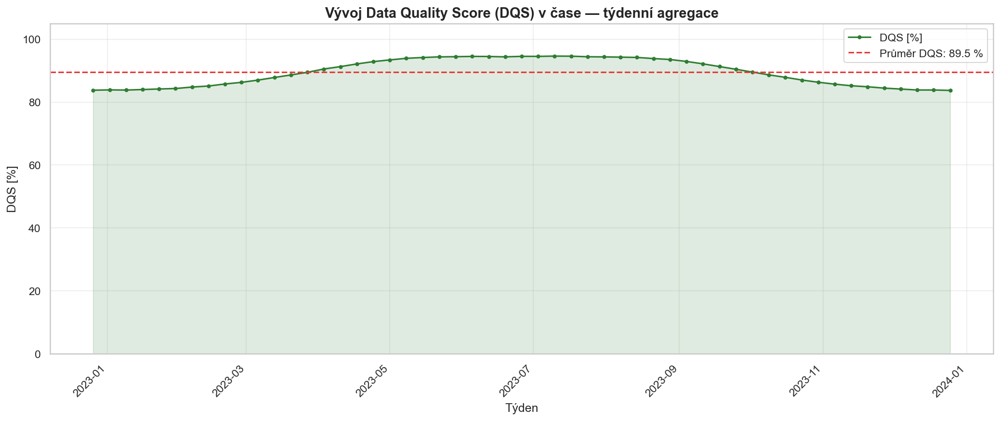
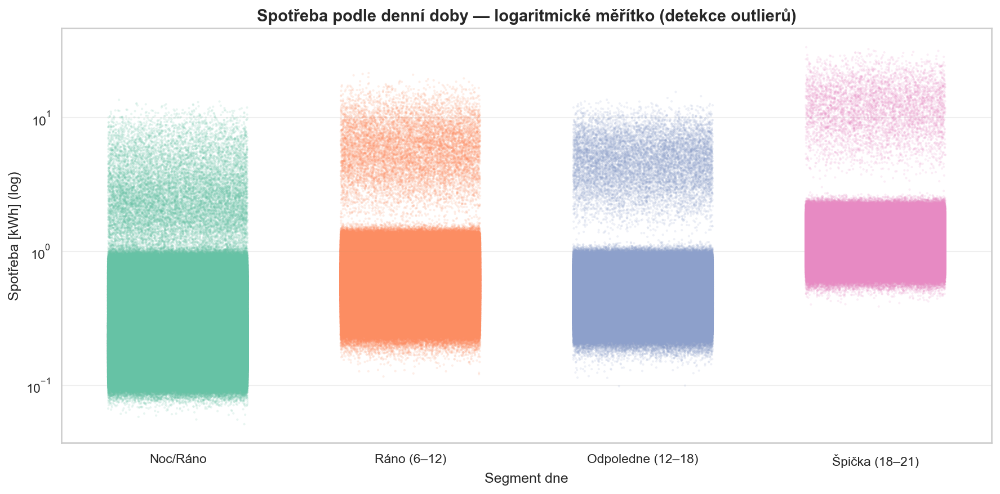

Semestrální projekt z předmětu - Česká zemědělská univerzita v Praze, Provozně ekonomická fakulta
Tento semestrální projekt se zabývá návrhem a implementací datového produktu pro fiktivní energetickou společnost EcoHome a.s. Cílem práce je předvést praktické využití technologií pro zpracování velkých dat (Big Data) při řešení reálného byznysového problému – optimalizace nákupu elektrické energie na spotovém trhu.
Projekt demonstruje celý životní cyklus dat od jejich získání (kombinace veřejného API a synteticky generovaných dat z IoT senzorů), přes integraci a čištění, až po finální průzkumovou analýzu (EDA) a vizualizaci. Výsledkem je návrh analytického řešení a dashboardu, který interním nákupčím pomáhá předvídat spotřebu domácností, analyzovat dopady počasí na solární výrobu a efektivně snižovat provozní náklady pomocí strategie "Peak Shaving".
Zvolenou firmou je fiktivní energetická společnost EcoHome a.s., která funguje jako dodavatel energií a virtuální elektrárna pro chytré domácnosti (analyzujeme Prahu 20). Hlavním problémem firmy je, že kolísavá výroba ze solárních panelů a večerní špičky spotřeby prodražují nákup elektřiny na burze. Uživatelem datového produktu jsou interní analytici a nákupčí elektřiny v EcoHome. Hodnota produktu spočívá v tom, že dashboard s daty umožní optimalizovat nákup (tzv. Peak Shaving) a ušetřit firmě výrazné náklady.
Domy tu elektřinu samy primárně spotřebovávají a EcoHome hospodaří s přebytky a řeší nedostatky. Funguje to ve dvou základních fázích:
EcoHome musí tu chybějící večerní elektřinu koupit na velké energetické burze. A protože večer spotřebovávají elektřinu úplně všichni a soláry nesvítí, je v tuto dobu elektřina absolutně nejdraží. Náš datový produkt pomáhá EcoHome předvídat chování těchto 1000 domů. Když naši analytici díky datům o počasí a historii spotřeby vědí, že bude zítra zataženo a zima (panely nic nevyrobí a lidi budou topit), zjistí, že večer bude obrovský nedostatek. Mohou tak tu elektřinu nakoupit na burze s předstihem, dokud je levná, a ušetřit firmě obrovské peníze.
Náš datový produkt má za cíl odpovědět na tyto klíčové otázky:
Pro měření úspěšnosti a sledování vývoje jsme definovali tři měřitelná KPI.
Definice: Podíl spotřebované energie, která nebyla
pokryta vlastní solární výrobou a musela se dokoupit ze sítě.
Vzorec: (Spotřeba ze sítě / Celková spotřeba
domácností) * 100.
Jednotka a frekvence: %, vyhodnocováno denně.
Baseline a cílová hodnota: Nyní 65 %, cílová
hodnota <45 %.
Definice: Průměrná nákupní cena za MWh elektřiny v
nejhorší večerní špičce (18:00 - 21:00).
Vzorec: Celkové náklady na nákup elektřiny
(18h-21h) / Objem nakoupené elektřiny v MWh (18h-21h).
Jednotka a frekvence: CZK/MWh, vyhodnocováno
týdně.
Baseline a cílová hodnota: Nyní 3500 CZK/MWh, cíl
<2800 CZK/MWh.
Definice: Podíl validních, chybami nezatížených
záznamů ze smart-meterů vůči všem přijatým záznamům.
Vzorec: (Počet validních hodinových záznamů bez
NULL hodnot / Očekávaný počet záznamů) * 100.
Jednotka a frekvence: %, vyhodnocováno denně.
Baseline a cílová hodnota: Nyní 92 %, cíl > 99
%.
Výstupy budou sloužit interním nákupčím k rozhodování o tom, kdy nakupovat zásoby elektřiny na spotovém trhu. Hlavním omezením našeho projektu je využití syntetických dat pro spotřebu domácností, která v sobě budou mít uměle vložený šum a výpadky senzorů, a budou kombinována s reálnými historickými daty o počasí. Data budou zpracována v denních/hodinových dávkách, nikoliv v plném real-time streamu.
Naše datová platforma integruje dva primární zdroje dat:
Pro lokální fázi vývoje a testování (PoC) využíváme analytickou in-memory databázi DuckDB. Surová data (Raw data) ve formátech CSV a Parquet jsou pomocí jazyka Python (knihovna Pandas) očištěna (odstranění nulových hodnot z výpadků senzorů) a následně nahrána do jednoho lokálního databázového souboru .duckdb. Datová pipeline probíhá v krocích: Čištění surových dat → Obohacení (join IoT dat a počasí podle času) → Agregace spotřeby (výpočet takzvaného "net loadu"). Vše je zpracováno formou Jupyter notebooku.
V případě stonásobného nárůstu objemu dat (např. rozšíření z Prahy 20 na celou ČR) a požadavku na near-real-time latenci by naše lokální řešení pomocí DuckDB nebylo dostačující. Platforma by byla migrována do cloudu s využitím distribuovaných systémů. Surová data by byla ukládána do distribuovaného souborového systému HDFS (Hadoop Distributed File System), který zajistí automatickou replikaci a odolnost proti výpadkům uzlů. Pro streaming dat ze senzorů v reálném čase bychom využili Apache Kafka a samotné výpočty agregací v paměti by obsluhoval masivně paralelní Apache Spark.
High-level architektura

Datový tok (Data Lineage):

Životní cyklus dat v platformě EcoHome zahrnuje plánování sběru, transformaci, analytické využití a případnou likvidaci. Sběr reálných dat o počasí probíhá přes API a IoT data jsou generována synteticky. Po zpracování a spojení v databázi DuckDB jsou data využívána pro vizualizace. Retenční politika stanovuje, že surová data (raw data) z IoT senzorů s detailní hodinovou granularitou budou uchovávána maximálně po dobu 3 let pro účely trénování prediktivních modelů. Po této době budou plně anonymizována a agregována na úroveň měsíců, případně smazána, aby se minimalizovaly náklady na úložiště.
Pro správu dat a datové platformy (Data Governance) ve společnosti EcoHome využíváme metodiku RACI k jasnému vymezení odpovědností mezi jednotlivými odděleními:
Pro naši analýzu využíváme dva primární datasety. Reálná data o počasí a syntetická data z IoT elektroměrů. Zde je jejich přehled:
| Název datasetu | Zdroj a způsob získání | Formát uložení | Stručný popis obsahu |
|---|---|---|---|
| Počasí (Weather Data) | Open-Meteo API (Reálná data) | CSV | Historická hodinová data o venkovní teplotě a oblačnosti specificky pro oblast Prahy 20. |
| Smart Meters (IoT) | Synteticky generováno (Python skript) | Parquet | Hodinové záznamy obsahující simulovanou spotřebu a výrobu solární energie pro 1000 domácností. Obsahuje uměle zanesený šum pro testování kvality. |
Z důvodu nedostupnosti detailních reálných dat z chytrých elektroměrů byla data o spotřebě a výrobě vygenerována synteticky v jazyce Python. Aby data nebyla „příliš hezká“ a reflektovala realitu, zahrnuli jsme následující principy:
Před samotnou analýzou byla data načtena do databáze DuckDB. Během fáze čištění byly detekovány chybějící hodnoty (sloužící pro výpočet KPI Data Quality Score), které byly pro účely výpočtu spotřeby nahrazeny dopředným vyplněním (forward-fill). Z časového razítka (timestamp) byly extrahovány nové kategorické atributy (features): hodina, den_v_tydnu a mesic. Následně proběhla deduplikace záznamů a obě tabulky byly spojeny (JOIN) pomocí klíče timestamp do finálního analytického pohledu v_net_load.
V rámci průzkumové analýzy (EDA) v prostředí Jupyter Notebook jsme vytvořili datový příběh navázaný na naše byznys otázky a KPI. U všech grafů byla dodržena pravidla pro snižování kognitivní zátěže (odstranění zbytečných prvků, správné pojmenování os včetně jednotek a střídmé využití barev).

Graf na obrázku ukazuje, jak se mění závislost domácností na síti v jednotlivých měsících. Jasně vidíme, že v zimních měsících závislost roste nad naši baseline (65 %), zatímco v létě díky solárům klesá.

Bodový graf na obrázku dokazuje silnou negativní korelaci mezi oblačností (v %) a průměrnou výrobou solárních panelů (v kWh).

Sloupcový graf na obrázku průměrné čisté spotřeby podle hodin jasně vizualizuje tzv. "kachní křivku". Ukazuje kritickou špičku mezi 18:00 a 21:00, kdy panely nevyrábí, ale spotřeba je maximální.

Histogram na obrázku ukazuje rozložení nákladů (v CZK/MWh) během večerních špiček. Většina dní se pohybuje kolem baseline 3500 CZK, ale vidíme zde i extrémní pravý chvost (velmi drahé dny).

Krabicový graf (Box-plot) na obrázku hodinové spotřeby odhaluje úmyslně zanesený šum a extrémní odlehlé hodnoty, které představují buď havárii, nebo chybu IoT senzoru.

Graf na obrázku sleduje KPI DQS a ukazuje dny, kdy došlo k masivním výpadkům přenosu dat ze senzorů (úmyslně vložených 5 % NaN hodnot), což znehodnocuje naši analytiku.

Doplňující logaritmické zobrazení distribuce spotřeby.
Z naší průzkumové analýzy (EDA) vyplynulo pět hlavních poznatků, které přímo odpovídají na naše byznysové otázky:
Naše analýza má několik objektivních omezení. Prvním je samotná kvalita a pokrytí dat – spotřeba a solární výroba jsou generovány z matatických modelů a nezachycují proto reálné vzorce chování lidské populace (např. dovolené či využívání klimatizace). Zároveň jsou data prostorově omezena na jedinou lokalitu (Praha 20) a jednoletý časový horizont, což brání sledování dlouhodobých meziročních trendů. Druhým limitem je bias a přenositelnost. Námi modelované domácnosti sdílejí uniformní denní profil (liší se jen měřítkem), ačkoliv reálná populace je mnohem více heterogenní (rodiny vs. jednotlivci). Šum ze senzorů je navíc rozložen rovnoměrně, zatímco v praxi spíše dochází k hromadným výpadkům celé oblasti. Z hlediska technických omezení je databáze DuckDB pro našich necelých 9 milionů řádků dostatečná, ale při škálování řešení na statisíce domů by bylo nutné přejít na cloudové DWH nebo distribuovaný Spark.
Do budoucna doporučujeme firmě EcoHome nasadit prvky pokročilé automatizace a AI. Dává smysl využít modely strojového učení (např. Isolation Forest) pro real-time detekci vadných IoT senzorů a prediktivní modely časových řad (LSTM, Prophet) pro odhadování spotřeby na další dny. Lze také zavést dynamické adaptivní prahy pro KPI podle aktuální sezóny. Zásadním rizikem tohoto rozvoje je ale možnost přeučení (overfitting) modelů na syntetických datech, které v realitě mohou selhat. V regulovaném odvětví energetiky je navíc naprosto klíčová vysvětlitelnost rozhodnutí, proto se musíme vyvarovat tzv. black-box modelům a implementovat přísné kontrolní mechanismy a dohled.
Projekt byl realizován ve dvoučlenném týmu (matice RACI):
K řešení byly využity výhradně open-source nástroje. Programovali jsme v jazyce Python 3.12 s využitím knihoven Pandas (manipulace s daty), Matplotlib a Seaborn (vizualizace). Lokální uložení a analytické dotazování zajistila databáze DuckDB 1.x. Vývoj a analýza probíhaly v prostředí Jupyter Notebook, přičemž finální architektonické diagramy vznikly v nástroji draw.io.
Při tvorbě projektu jsme jako vývojového partnera a konzultanta lokálně nasadili generativní model Claude Code. AI nám aktivně pomohla s návrhem struktury datové platformy a vytvořením kostry Jupyter notebooku. Nejvýznamnější aplikací AI bylo generování Python skriptů pro syntetická data. Pomocí přesně formulovaných promptů jsme do dat zanesli "kachní křivku", negativní korelaci oblačnosti a úmyslný datový šum pro simulaci poškozených senzorů. Všechny výstupy a grafy generované pomocí AI byly členy týmu manuálně spuštěny a fakticky zkontrolovány.